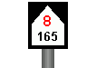

| Návěsti pro elektrický provoz | |
|---|---|
| návěst | význam |
 |
Vypněte proud. |
| Zapněte proud. | |
 |
Všechny koleje bez trolejového vedení. |
| Kolej v přímém směru bez trolejového vedení. | |
| Kolej ve směru vlevo bez trolejového vedení. | |
 |
Kolej ve směru vpravo bez trolejového vedení. |
 |
Připravte se na stažení sběrače. |
| Stáhněte sběrač. | |
| Zdvihněte sběrač. | |
 |
Začátek stejnosměrné trakční soustavy. |
| Začátek střídavé trakční soustavy (25kV, 50Hz). | |
 |
Začátek střídavé trakční soustavy (15kV, 16,67 Hz). |
 |
Začátek snížené výšky trolejového drátu. |
| Konec snížené výšky trolejového drátu. |
| Návěsti označující místo na trati | ||
|---|---|---|
| návěst | označení | význam |
| Vzdálenostní upozorňovadla k vjezdovému, cestovému, odjezdovému návěstidlu |
Vlak se blíží k samostatné předvěsti. | |
 |
Vzdálenostní upozorňovadla k oddílovému, krycímu návěstidlu |
Vlak se blíží k samostatné předvěsti. |
| k hlavnímu návěstidlu | Vlak se blíží k hlavnímu návěstidlu. | |
| Námezník | Hranice koleje. | |
| Hranice izolovaného úseku. | ||
| Lichoběžníková tabulka | Hranice dopravny. | |
| Tabule před zastávkou vzdálenostní upozorňovadlo před zastávkou |
Vlak se blíží k zastávce. | |
 |
Konec nástupiště. | |
| Tabulka s křížem | Výstraha. | |
| Začátek ozubnice. | ||
 |
Konec ozubnice. | |
| Vzdálenostní upozorňovadla k přejezdníku |
Vlak se blíží k přejezdníku. | |
| na námezníku | Konec vlakové cesty. | |
 |
na koncovníku | Konec vlakové cesty. |
 |
Staničník | Kilometrická poloha. |
 |
Staničník | Kilometrická poloha. |
|  | Sklonovník | Stoupání tratě. |
| Sklonovník | Klesání tratě. | |
 |
Místo zastavení. |
| Návěsti zvláštního určení | ||
|---|---|---|
| návěst | označení | význam |
 |
Zastavte práci pluhu. | |
 |
Začněte práci pluhu. | |
| Drhlík | Zapněte čistící zařízení. | |
| Drhlík | Vypněte čistící zařízení. | |
| Přejezdník | Otevřený přejezd. | |
| Přejezdník | Uzavřený přejezd. | |
| Radiovník | Přepněte kanálovou skupinu. | |
| Radiovník | Přepněte kanálovou skupinu. | |
 |
Očekávejte otevřený přejezd. |